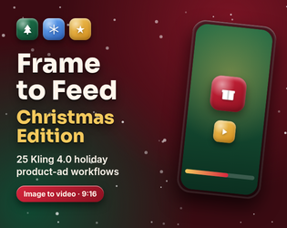

Devlog
Release notes and product drops from the Zlatko69 catalogue. Full posts live on itch.io when available.

Smooth VFX for Godot 4 Vol. 2 is out: 20 new customizable 2D effects
Read on itch.io →
Weather & Time-of-Day Director released
Godot 4 addon: day cycle and weather (rain, snow, fog) with a demo village scene.
View on itch.io →
Retro 32-bit Texture Studio released
Photo to seamless retro textures: palettes, dithering, batch, Godot 4 + Blender material export. Windows and Linux.
View on itch.io →
Voltblip released
Retro 8-bit sound effect generator for Godot 4: presets, seeds, 4-layer mixer, 16-step sequencer, WAV + .tres export.
View on itch.io →
Smooth VFX Pack for Godot 4 — 20 Customizable Effects
View on itch.io →
Frame to Feed Christmas Edition released
25 Christmas image-to-video product-ad workflows for Kling 4.0.
View on itch.io →
Godot Map Forge released
Normal, Height, AO & Roughness Maps for Godot 4.
View on itch.io →
Pixmelt released
Photo to pixel art tool — offline, browser-based.
View on itch.io →